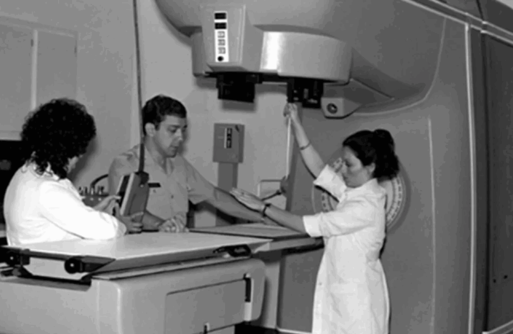

Na década de 1980, surgiu uma máquina de radioterapia que prometia diversos avanços da área da medicina. A máquina era moderna demais para a época, e rapidamente impressionou a população. Essa era Therac-25. E esse caso serve para mostrar que um erro de um programdor ou engenheiro pode ceifar mais vidas do que o erro de um médico.
Desenvolvida pela Atomic Energy of Canada Limited (AECL), O Therac-25 foi projetado para tratar pacientes com câncer, utilizando feixes de elétrons e fótons para administrar doses precisas de radiação em tumores, assim como o processo de radioterapia funciona até hoje.
A máquina realizava dois tipos principais de tratamento, o feixe de eletrons para regiões mais superficiais, e os raios x de alta energia, para atingir regiões mais profundas.

O problema é que, ao contrario de modelos anteriores, como o Therac-20, o Therac-25 eliminou varios mecanismos de segurança fisicos, passando a confiar exclusivamente no software do aparelho, em resumo, o Therac 25 faria tudo sozinho. o radiologista apenas precisaria posicionar o paciente na máquina, informar a prescrição médica e definir o tipo de radiação. E, em teoria, isso diminuiria a possibilidade de falhas humanas. Mas essa decisão foi fundamental para o desastre.
Por cerca de dois anos, a máquina funcionou tranquilamente, antes de seu primeiro acidente documentado. Uma paciente oncológica de Marietta, Geórgia, buscou um tratamento no qual receberia 200 rads de radiação para o tratamento de um tumor na mama. Inesperadamente, ela recebeu cerca de 20.000 rads em sua pele, 100 vezes além do que deveria receber. Mais tarde, a máquina viria a causar seu sexto acidente, incluindo três mortes por overdose de radiação.
Apesar das tragédias, a AECL se mostrou pouco preocupada, visto que a empresa agia com negação, negligência e arrogância, inclusive culpando os operadores da máquina. Segundo eles, era tecnicamente impossível que o Therac-25 liberasse uma overdose de radiação.
O código dessa máquina escondia algo interessante: o fato de ter sido escrito inteiramente por apenas uma pessoa, a qual nem ao menos se soube a identidade mesmo após inúmeros processos tomados pela empresa. Por fim, este caso se tornou um exemplo sobre o porquê de sistemas críticos nunca poderem depender de um único desenvolvedor.